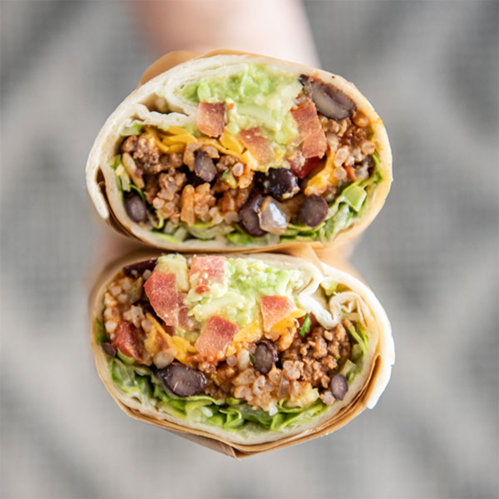

Burrito Recipe!

Burrito's are extremely similar to tacos, the main difference being the size
and that they are enclosed. The seal on a burrito is what makes or breaks the experience.
I'm going to tell you how to load a burrito perfectly and keep it closed.
Ingredients
- 1/2 lb of Ground Beef
- 1/2 Onion
- 1 Medium Tomato/li>
- 1 Can of Black Beans
- 1 Cup of Shredded Lettuce
- 1/2 Cup of Shredded Cheese
- 3 Tbsp of Sour Cream
- 4 Flour Tortillas
Steps
- Brown ground beef and season to your preference
- While beef is browning, heat black beans and salt lightly
- Dice onion and tomato and set aside for garnish
- Heat tortilla in a pan until is is pliable
- Spread sour cream onto tortilla, top with beef, black beans, tomatoes, onions into the center of the flattened tortilla
- Top with shredded lettuce and cheese
- Fold the left and right sides into the middle of the tortilla, then take the side closest to you and folded it over the middle
- Tightly but gently pull the mass towards you being sure to keep the filling contained, then fold the final flap over the burrito
- Drop the burrito, flap-side down onto a warm pan and lightly toast until the flap has sealed